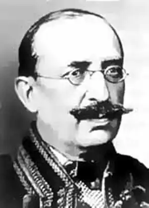
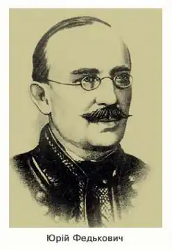
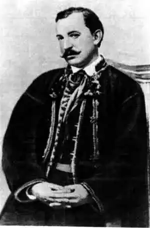
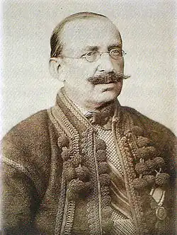
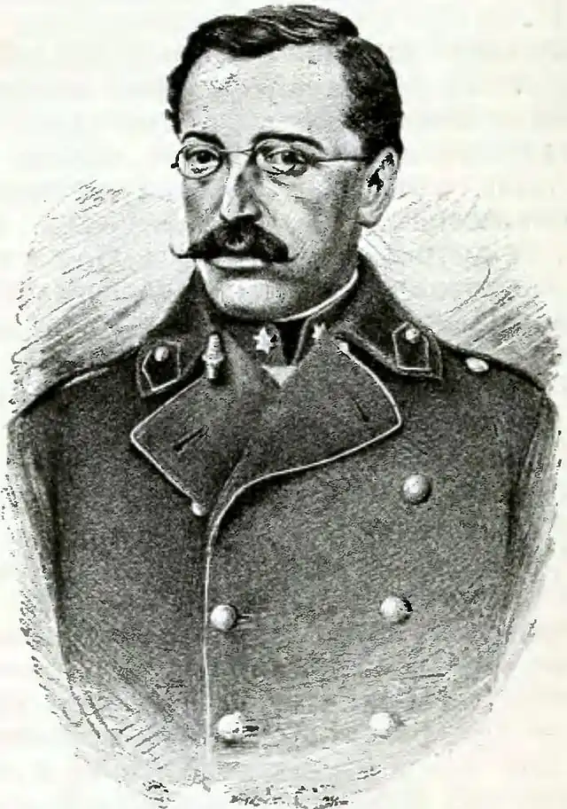

ЮРІЙ ФЕДЬКОВИЧ
(1834 — 1888)
Юрій Федькович (повне ім'я і прізвище — Осип Домінік Гординський де Федькович; ім'я Юрій письменник прибрав у зрілому віці) народився 8 серпня 1834р. в с. Сторонець-Путилів (тепер смт Путила Чернівецької обл.). Батько його — спольщений шляхтич — займав на час народження сина та пізніше незначні урядові посади. Мати походила з сім'ї українського священника, проте в побуті дотримувалася селянських звичаїв — цю рису перейняв від неї й майбутній письменник. У 1846 — 1848 рр. Федькович навчається у нижній реальній школі у Чернівцях. Грунтовне і доповнене згодом знання мови, яке виніс Федькович зі школи, стало передумовою його німецькомовної творчості, що розпочалась у роки заробітчанських мандрів юнака по Північній Молдавії та Румунії. Першими друкованими творами Федьковича були німецька балада та романтичне оповідання "Der Renegat" (1859, сліди балади, опублікованої окремо, загублено). Творчість німецькою мовою письменник не припиняв до кінця життя, видавши дві збірки поезій ("Gedichte", 1865; "Am Tscheremusch. Gedichte eines Uzulen", 1882) та надрукувавши ряд віршів у часописах. Кілька творів, в тому числі німецький переклад трагедії "Довбуш", лишилися в рукописах. У німецькомовній творчості Федькович розробляє переважно ті ж проблеми, розгортає ті ж мотиви, що й у творчості українською мовою; нерідко твір німецькою мовою є перекладом або переспівом його українського твору або навпаки. Поетичні писання Федьковича німецькою мовою були високо оцінені Нойбауером, здобули схвальні відгуки І. Франка, О. Маковея, чеського літературознавця К. Кадлеца. Вихід збірки "Am Tscheremusch" вітала у 1883р. віденська газета "Neue freie Presse". Нарис про Федьковича подала "Історія німецько-австрійської літератури". З листопада 1852р. до лютого 1863р. Федькович перебуває на службі у цісарській армії. Представники молодої західноукраїнської інтелігенції заохотили офіцера австрійської армії почати писати також рідною мовою. Перші українські вірші Федьковича були опубліковані в брошурі А. Кобилянського "Slovo na slovo do redaktora "Slova"" (1861) і захоплено сприйняті читачами. Брошура була спрямована проти "москвофільської" орієнтації редагованої Б. Дідицьким газети "Слово". Зразки творчості не відомого доти поета наводилися з метою заперечення "язичія" далеких від народного життя творів, що друкувались у "москвофільських" часописах. Б. Дідицький, проте, сам зацікавився новим поетом, виявивши добре художнє чуття. За його редакцією та з його передмовою 1862р. у Львові була видана збірка "Поезії Іосифа Федьковича". Збірка складається з двох розділів. У першому — "Думи і співанки" — вміщено 48 ліричних віршів різної тематики. 10 творів із більш відчутним повіствувальним сюжетом виділені в розділ "Балади і оповідання", серед них своєрідний цикл — балади "Добуш", "Юрій Гінда", "Киртчалі". Ще перебуваючи в армії, Федькович зближується з рядовими жовнірами, співає з ними народних пісень і сам виступає в ролі складача "співанок". З цими напівфольклорними, напівлітературними творами пов'язаний його перший український вірш "Нічліг" ("Звізди по небеснім граді"), складений, ймовірно, в травні 1859р. під час походу полку в Італію. Фольклорні зацікавлення Федькович проніс крізь усе життя, ставши великим знавцем, збирачем і популяризатором як поетичних (пісні, коломийки), так і прозових (казки, анекдоти, приповідки) творів. У рукописах письменника залишилась фольклорна збірка "Найкращі співанки руського народу на Буковині" (частина опублікована за радянського часу), серед записів якої в окремий розділ виділені "Співанки Федьковича" — самостійні твори поета на фольклорні мотиви. Фольклористична й етнографічна діяльність Федьковича знайшла поцінування в тому, що письменника було обрано членом Південно-Західного відділу Російського географічного товариства (1873). У 1863р. у львівському тижневику "Вечерниці" (ідея його заснування належала Федьковичу) вміщено перші його українські оповідання — "Люба — згуба", "Серце не навчити", "Штефан Славич". Останнє з них уже написано по виході з армійської служби. Творчість Федьковича характеризує коло наскрізних тем і мотивів: краса гуцульських звичаїв зображена ним у багатьох поезіях і більшості оповідань, у драмах "Керманич" та "Сватання на гостинці"; тяготи жовнірського життя представлені в ряді ліричних творів перших років, у поемах "Новобранчик" (1862) і "Дезертир" (1867), в оповіданнях "Три як рідні брати", "Штефан Славич"; мотив дезертирства втілено в трьох поетичних творах однієї назви "Дезертир". Мотив цей, представлений як романтична ідея втечі від казенного, офіційного світу, наявний також в інших творах письменника. Постійною для творчості Федьковича була тема опришківства. Чимало творів присвячено розробці теми кохання як "люби — згуби", ситуаціям вибору суспільної ролі героєм тощо. Молоді діячі "народовського" руху залучили письменника до співробітництва у виданнях "Мета", "Нива", "Правда". Проте стосунки Федьковича з літераторами "народовського" табору не були тривкими. Кризою в їх взаєминах позначений львівський період діяльності Федьковича на посаді редактора "народовського" товариства "Просвіта" (1872 — 1873 рр.). За винятком нетривалого перебування у Львові, Федькович з 1863 до 1876р. жив переважно у Сторонці-Путилові, був кілька років шкільним інспектором Вижницького округу. Він виношує плани викладання у школах народною мовою, видає "Співаник для господарських діточок" (1869), де вміщує чимало своїх творів для дітей, складає "Буквар" (не надрукований). Як педагог Федькович обстоював зв'язок школи з життям, господарською діяльністю, критикував засилля церковної схоластики. У 60-х рр. Федькович активно виступає на сторінках галицької преси з художніми творами (вірші, поеми, оповідання, а далі й драми), робить спроби розширення їх тематики, розбудови поетики, що, проте, не завжди знаходило співчутливу підтримку. В обстановці непорозумінь з літераторами як "москвофільського", так і "народовського" напряму у Коломиї в 1867 — 1868 рр. вийшла нова, однак невдало зредагована збірка Федьковича "Поезії" (у 3-х випусках). На чільне місце у ній була поставлена цікава, але загалом наслідувальна поема "Мертвець", тим часом не було вміщено високохудожній цикл "З окрушків" та інші твори. Збірка, хоч у ній містились визначні зразки Федьковичевої поезії — поеми "Дезертир", "Циганка", "На могилі званого мого брата Михайла Дучака у Заставні" (1867), — недоречно акцентувала на формальній залежності Федьковича від Шевченка, яку буковинський поет певний час зазнавав, пробуючи виступити у непосильній і непотрібній ролі "галицького Шевченка". 1876р. Ю. Федькович завершує поетичний цикл "Дикі думи", що являє собою своєрідний підсумковий огляд художніх ідей і мотивів його поезії. Початком того ж року датовані "Повісті Юрія Федьковича" — книга, видана заходами М. Драгоманова в Києві й складена з оповідань, що доти друкувались у періодиці. Проте письменник на той час уже втратив інтерес до прози, переважні зусилля зосередивши на писанні драматичних творів. Федькович приділяв драматургії значні творчі зусилля починаючи з 1865р. Драматичний рід літератури письменник вважав найголовнішим — як у вияві спроможностей автора, так і в характеристиці самої літератури, відносячи драму до пори її розквіту. Першим драматичним твором Федьковича був жарт на одну дію "Так вам треба!". Пізніше (1884) Федькович розширив п'єсу до трьох дій, назвавши її "Сватання на гостинці". На побутовому матеріалі виросла мелодрама "Керманич, або Стрілений хрест" (перша, прозова, редакція — 1876, друга, віршова — 1882). Значне місце в творові займають поетичні перекази, передусім про короля Гуцула, що дрімає у Сокільському (вплив балади Л. Уланда "K?nig Rothbart" та міфічних теорій Нойбауера), увага акцентується також на ставленні героїв до "стріленого" хреста, що впливає на їх долю. Подібні міфічні мотиви перебувають у центрі п'єси "Довбуш". Повна її назва — "Довбуш, або Громовий топір і знахарський хрест". Над цим твором Федькович працював найбільше, створивши три редакції українською мовою (1867, 1876 та 1884) і дві — німецькою (третя українська та друга німецька редакції ідентичні). Трагедія "Довбуш" була двічі поставлена на сцені — 1876р. у Львові та 1877р. у Вижниці, обидва рази без успіху. Неспроможність політичного мислення, що виявилась в образі Довбуша, характеризує в цілому трагедію Федьковича "Хмельницький" (1887 — 1888, три редакції). У так званий львівський період діяльності Федькович здійснив ряд перекладів та переробок п'єс іноземних авторів. Найбільш творчим підходом відзначається переробка комедії німецького драматурга Е. Раупаха, що дістала назву "Запечатаний двірник" (за життя автора не друкувалася; в радянський час з успіхом ставиться на сцені Чернівецького музично-драматичного театру ім. О. Кобилянської). З німецької мови Федьковичем перекладено драму Р. Готшаля "Мазепа". Одним з перших серед українських письменників Федькович звернувся до спадщини Шекспіра, травестувавши його комедію "Приборкання непокірної" у "фрашку" "Як козам роги виправляють" (1872), а також переклавши трагедії "Макбет" та "Гамлет". За відомостями біографів, Федькович, крім перекладу "Мазепи", написав оригінальний драматичний твір під такою ж назвою (досі не відомий), а також виношував плани написати трагедії "Гонта" та "Кара Діорді" (Кара Дьордій — діяч сербського національно-визвольного руху). Проте письменникові не пощастило повністю реалізувати свої творчі задуми. У Чернівцях, куди після смерті батька переїхав жити Федькович, поглиблюється усамітненість письменника. Він відходить від будь-якої літературної праці, дає волю давньому зацікавленню астрологією. В 1884р. буковинська інтелігенція робить спроби навернути письменника до літературного та громадського життя. З січня 1885р. Федькович як редактор підписує новостворену газету "Буковина", де друкує кілька нових своїх творів. Наступного року місцева громадськість відзначила 25-річний ювілей літературної діяльності Федьковича, що стало певним заохоченням його до подальшої праці. Помер письменник 11 січня 1888 р.